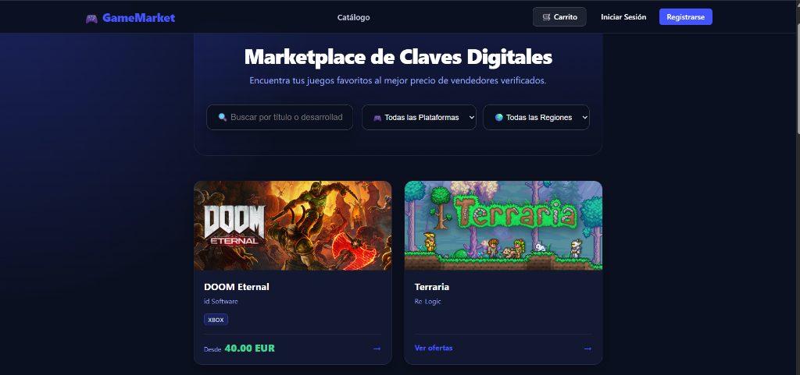
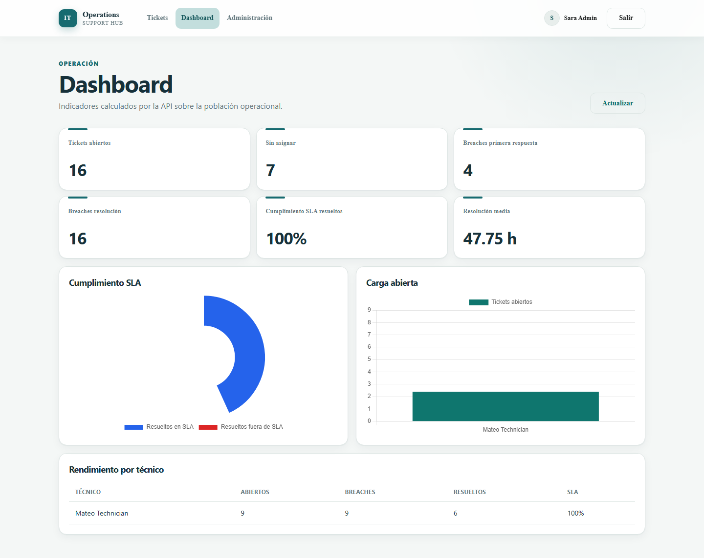
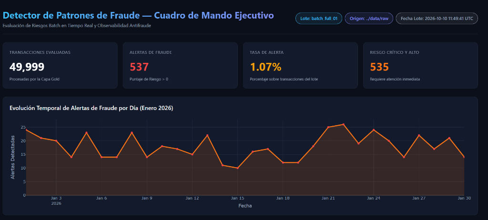
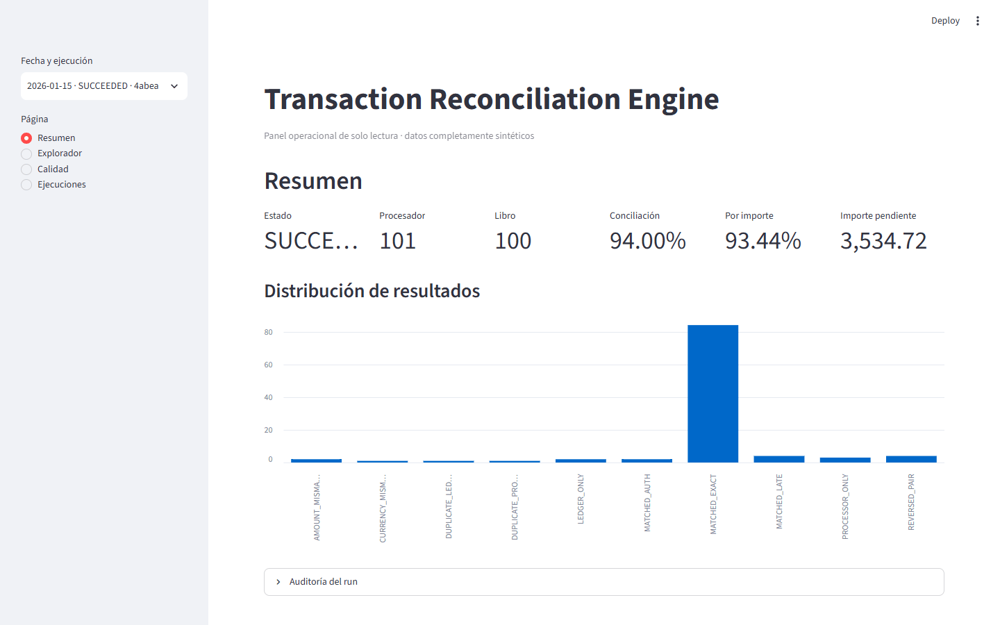
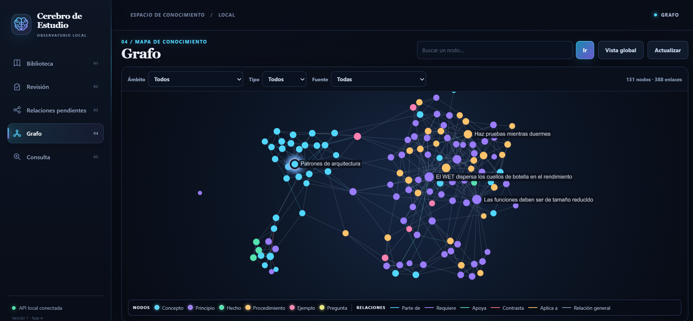
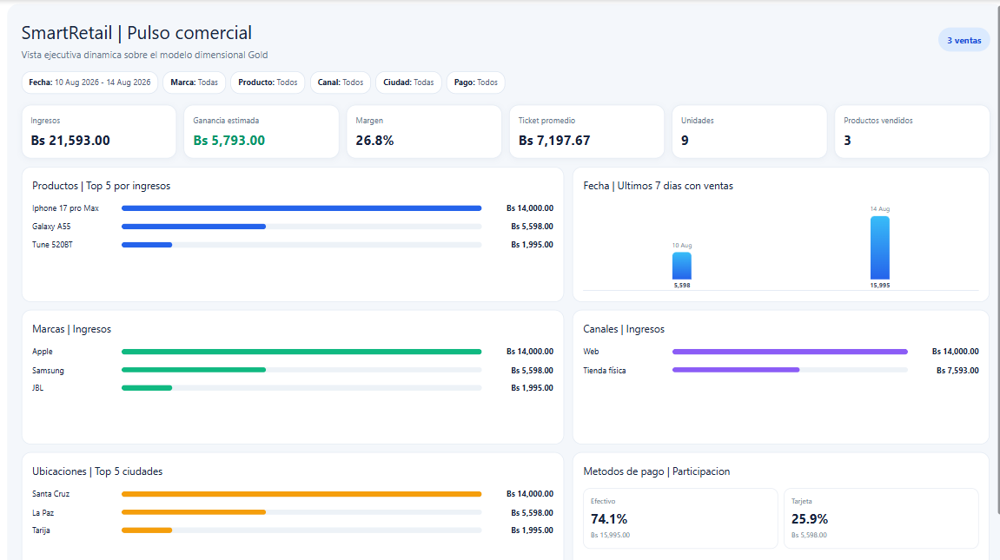
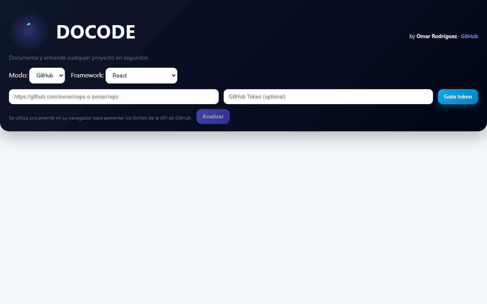

Backend & Full-stack
APIs, reglas de negocio, autenticación, persistencia y experiencias web conectadas de extremo a extremo.
Omar Gustavo Rodriguez Becerra · Madrid
Desarrollador que combina agentes de IA con buenas prácticas de ingeniería: arquitectura limpia, código mantenible y revisión crítica de cada resultado.
01 / Perfil
Soy Ingeniero de Sistemas con experiencia en desarrollo backend, bases de datos, documentación técnica y análisis de información. Mi paso por equipos de TI y Marketing Estratégico en banca me enseñó a conectar tecnología, operación y necesidades de negocio.
Trabajo con especial atención a la calidad de datos, las reglas de dominio, la seguridad y la trazabilidad. Busco un equipo donde pueda seguir creciendo mientras construyo soluciones que sean fáciles de entender, probar y mantener.
Ver CVAPIs, reglas de negocio, autenticación, persistencia y experiencias web conectadas de extremo a extremo.
Pipelines reproducibles, arquitectura Medallion, controles de calidad y modelos que explican sus resultados.
Pruebas automatizadas, documentación útil, contenedores y flujos de trabajo pensados para operar con confianza.
02 / Trabajo seleccionado
Siete casos de estudio que conectan producto, arquitectura, datos y calidad. Todos usan datos ficticios, sintéticos o fuentes preparadas por el usuario.

Full-stack · E-commerce
Marketplace de licencias digitales con tres roles, inventario sensible y un checkout que debe mantener consistencia incluso ante compras concurrentes.

Enterprise · Full-stack
Aplicación interna ficticia que cubre el ciclo completo de una incidencia: reporte, clasificación, asignación, resolución, SLA y auditoría.

Data Engineering · Risk
Pipeline batch para ingerir transacciones sintéticas, medir su calidad y detectar patrones de riesgo mediante reglas explicables.

Data Systems · Finance
Motor determinista que concilia operaciones de un procesador de pagos con asientos contables y explica cada resultado.

Knowledge Systems · Local-first
Aplicación local que convierte fuentes preparadas por el usuario en conocimiento estructurado, revisado y consultable sin perder la evidencia original.

Data Platform · Retail Analytics
Plataforma end-to-end para registrar operaciones de una tienda ficticia y convertirlas en un modelo analítico listo para Power BI.

Developer Tool · Browser-only
Herramienta web que analiza repositorios públicos o carpetas locales y genera un contexto estructurado para documentación, revisión de código o trabajo con LLMs.
03 / Trayectoria
Experiencia
Análisis de datos y mejora de procesos con Excel, SQL Server, Power BI, Power Automate y Power Apps.
Experiencia
Desarrollo de una solución interna con .NET Core, Angular, SQL Server y MongoDB; apoyo en autenticación, pruebas y documentación técnica.
Formación
Universidad Católica Boliviana San Pablo. Formación complementaria en ingeniería de datos e inteligencia artificial en la nube.
04 / Contacto
Estoy abierto a oportunidades donde software, datos y mejora continua se encuentren. Si mi perfil encaja con tu equipo, conversemos.
omarwrt8@gmail.com